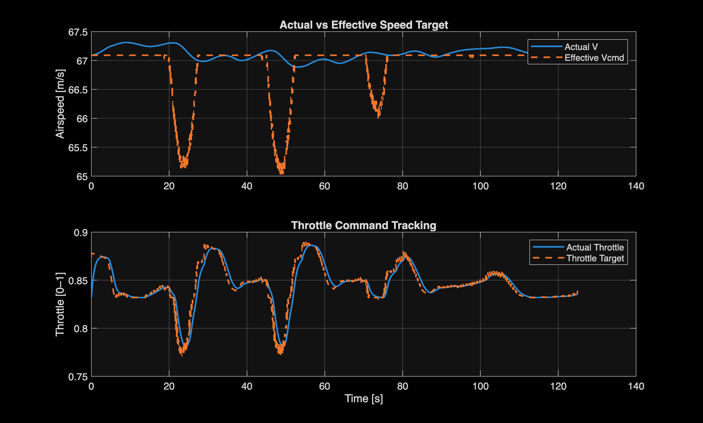
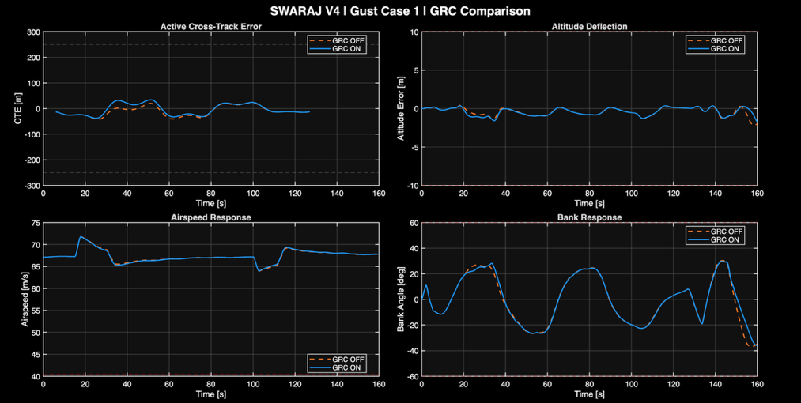
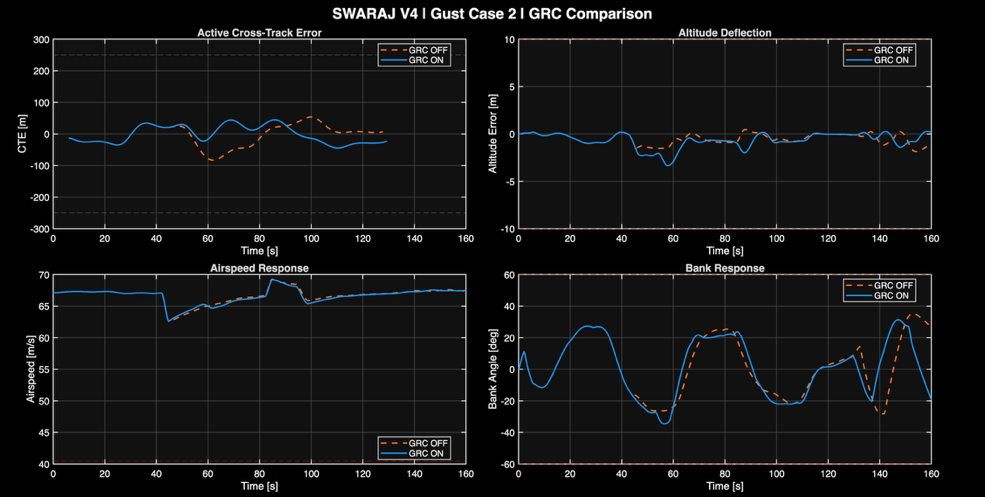
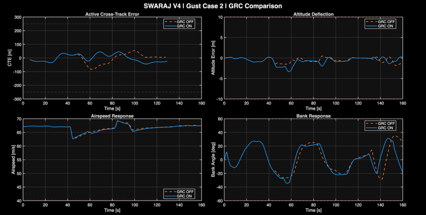

How does an aircraft prepare
for the next bend?
SWARAJ investigates how route geometry, aircraft state and disturbance information can be coordinated to guide an aircraft through successive turns without continuous pilot steering. The PDR extends the earlier 3-DoF concept through a coupled nonlinear aircraft model, coordinated control and quantitative evaluation.
The demonstrated scope is autonomous guidance and flight control. Onboard terrain perception, reconnaissance functions and hardware evaluation remain future work.
Interpret. Prepare. Execute. Correct.
A fixed mathematical map supplies the route. Look-Ahead and supervisory functions assess approaching curvature and current tracking. Banked Dynamics coordinates manoeuvre requirements before the lateral and longitudinal controllers generate surface and propulsion commands.
Original contribution
The project develops and integrates the supervisory logic, guidance interfaces and control coordination, then evaluates how those decisions affect the simulated aircraft. Established flight mechanics and control literature provide the physical foundation.
Development from the concept
The earlier project demonstrated behavioural changes using simplified aircraft dynamics. The PDR evaluates coupled motion, surface commands, propulsion response, tuning sensitivity and prescribed disturbances.
Read the earlier CDR project →Tracking performance,
with the aircraft response in view.
Final PDR run: 125 seconds, altitude reference 100 m, initial airspeed 67.089963 m/s, no external command perturbations or gusts, revised Energy/Throttle Controller, modular GRC disabled.

| Measure | PDR result | Design criterion / interpretation |
|---|---|---|
| Peak / RMS active CTE | 34.802 / 22.537 m | Peak ≤50 m preferred; ≤55 m maximum |
| Peak / RMS altitude error | 1.000 / 0.531 m | Peak ≤5 m |
| True airspeed range | 66.888–67.313 m/s | Minimum ≥58 m/s |
| Maximum aircraft bank | 27.347° | ≤30° nominal target |
| Completion / map progress | Flag = 1 / 98.51% | Completion remains qualified |


Speed retention and command tracking are distinct findings
Throttle follows its target and nominal airspeed remains bounded. Temporary reduced-speed commands are only partially reflected in actual airspeed before the reference recovers. This response motivates further lateral throttle and energy coordination.

Better lateral containment.
A visible vertical trade-off.
Four prescribed wind schedules were simulated with GRC disabled and enabled. The largest lateral improvements occur in crosswind and combined disturbances. Vertical and combined cases exceed the gust-altitude criterion with GRC enabled.
| Wind case | Peak CTE OFF → ON | Reduction | Peak altitude error OFF → ON |
|---|---|---|---|
| Longitudinal | 42.307 → 37.820 m | 10.61% | 2.140 → 1.744 m |
| Lateral | 83.104 → 44.979 m | 45.88% | 1.866 → 3.354 m |
| Vertical | 34.802 → 34.802 m | 0.00% | 7.897 → 10.502 m |
| Combined | 91.526 → 37.820 m | 58.68% | 8.672 → 11.333 m |

View the individual wind cases



A documented development baseline.
The report brings together aircraft trim and response checks, controller sensitivity, nominal flight, command changes and disturbance comparisons. The current release presents that evidence and identifies what remains to be resolved.
What did the tuning study establish?
The 44 group-sensitivity cases show that suitable flight conditions do not automatically ensure satisfactory route tracking. MLA −10% reduced peak CTE from 37.005 m to 35.309 m, while RMS CTE increased from 21.083 m to 22.561 m. The final nominal run includes a later energy/throttle revision and should be distinguished from that tuning campaign.
What is the current validation scope?
Software simulation of a nonlinear C182 model on a prescribed mathematical route. The work does not yet demonstrate real terrain perception, sensor-based navigation, physical flight or hardware-in-the-loop performance. Handbook comparisons provide operating context; structural and complete flight-envelope compliance remain to be evaluated.
What will be developed next?
Transient speed tracking, lateral/longitudinal energy coordination, vertical gust damping, terminal mission management, aircraft-specific speed/load supervision, adaptable route mapping and progressive sensor/hardware evaluation.
Report notation and reproducibility
The supplied PDF is retained as the development record. Its density-ratio airspeed equation should identify EAS rather than CAS; a corrected edition is pending. The model files, source code and raw logs are not included in this documentation release, so the published figures are evidence from the report rather than a reproducible executable package.
Report, evidence and development history.
Personal PDR report
November 2026 · 94 pages · supplied base edition · approximately 11 MB
Research documentation
Overview, reported results, assessment qualifications and known issues.
Earlier conceptual design
The original 3-DoF behavioural-control project and its results.
Project author: Ninad Samrat Bhave. Foundational equations and external research are acknowledged in the report. No open-source licence is granted by this documentation release.